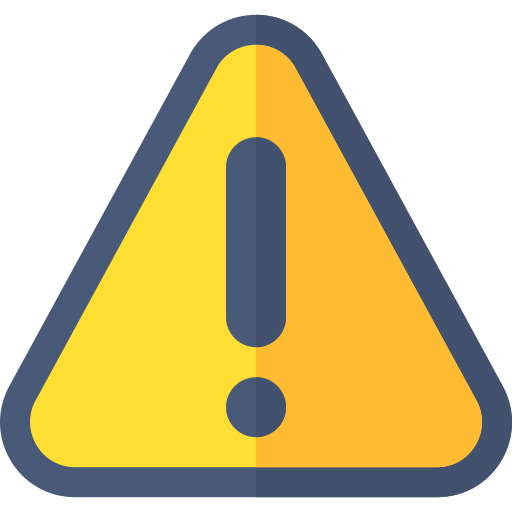
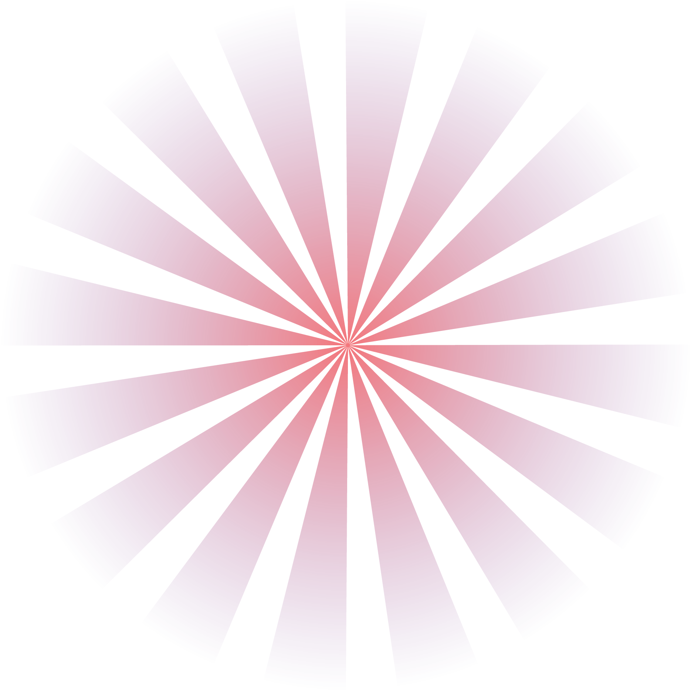
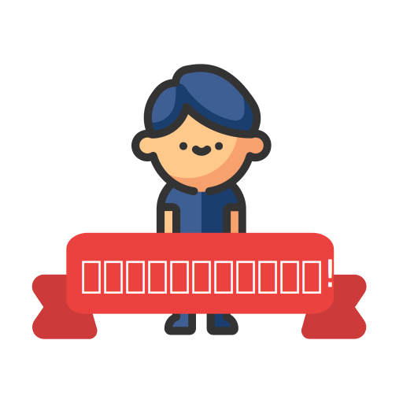

{{ investState }}
+ {{ data[index].points }} point
- {{ data[index].points }} point

{{ data[index].badge }}

SCORE
{{ point }}
badge ที่คุณได้รับ
{{ badgeDetail.name }}
{{ badgeDetail.details }}
งบประมาณที่ใช้ ${{ badgeDetail.budget }}
{{ badgeDetail.agency }}
{{ badgeDetail.date }}
อ่านเพิ่มเติม